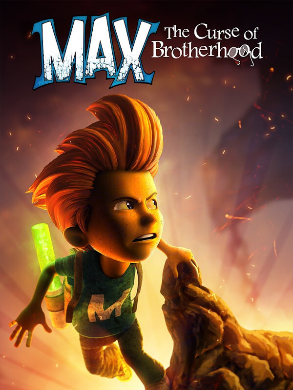

Max: The Curse of Brotherhood
Max: The Curse of Brotherhood
Details
|  | |
| Playtime | Not Played |
| Last Activity | Never |
| Added | 20/12/2024 16:41:09 |
| Modified | 18/05/2025 0:41:48 |
| Completion Status | Not Played |
| Library | Amazon Games |
| Source | Amazon |
| Platform | PC (Windows) |
| Release Date | 20/12/2013 |
| Community Score | 70 |
| Critic Score | 74 |
| User Score | |
| Genre | Adventure Platform Puzzle |
| Developer | Flashbulb Games Press Play Stage Clear Studios |
| Publisher | Flashbulb Games Microsoft Studios Stage Clear Studios Wired Productions |
| Feature | Single Player |
| Links | Official Wikipedia Steam Twitch |
| Tag | 2.5D 2D Action Adventure Controller Funny Indie Platformer Puzzle Puzzle Platformer Side Scroller Singleplayer |
Description
In its core Max: The Curse of Brotherhood is a physics-based puzzle/platformer and set in a 2.5D environment with a free and cinematic camera. The game has 7 chapters and 20 levels in total All levels are connected so the game feels like one long journey. Besides platforming, the gameplay twist is the magic marker which introduces a creative and open approach to how puzzles can be solved. Throughout the game the magic marker will gain different powers.
The five powers are
1. Earth pillars. You can create pillars from the earth to reach higher grounds.
2. Tree branches - You can grow trees to use them as platforms, springboards, rafts and moveable objects. Branches also catch fire.
3. Vines which work like ropes. You can crawl and swing in vines, but vines can also be used to tie objects together.
4. Water streams can be shaped freely and will move objects as well as Max along their path.
5. You must destroy obstacles and defeat Mustacho’s minions.
Each of the five powers are introduced in settings similar to the power themselves. The magic marker is triggered by pressing and holding RT and controlled by the right analog stick of the Xbox One controller and while controlling the magic marker Max cannot move at all.
The five powers are
1. Earth pillars. You can create pillars from the earth to reach higher grounds.
2. Tree branches - You can grow trees to use them as platforms, springboards, rafts and moveable objects. Branches also catch fire.
3. Vines which work like ropes. You can crawl and swing in vines, but vines can also be used to tie objects together.
4. Water streams can be shaped freely and will move objects as well as Max along their path.
5. You must destroy obstacles and defeat Mustacho’s minions.
Each of the five powers are introduced in settings similar to the power themselves. The magic marker is triggered by pressing and holding RT and controlled by the right analog stick of the Xbox One controller and while controlling the magic marker Max cannot move at all.